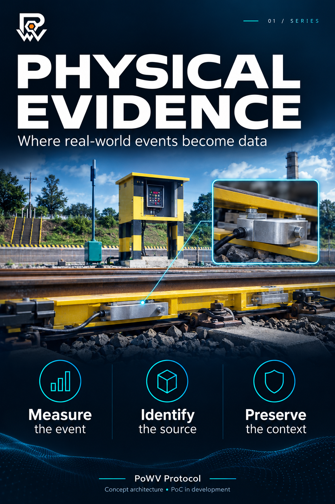
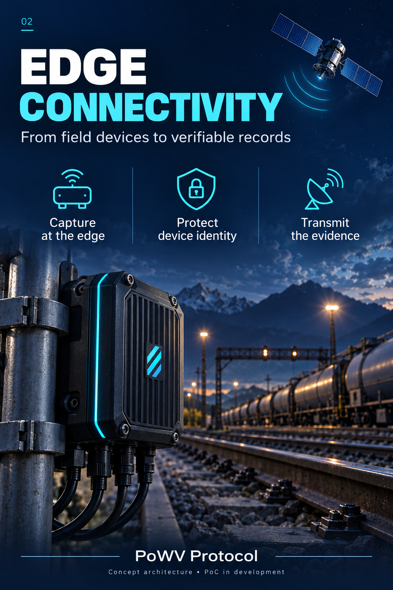
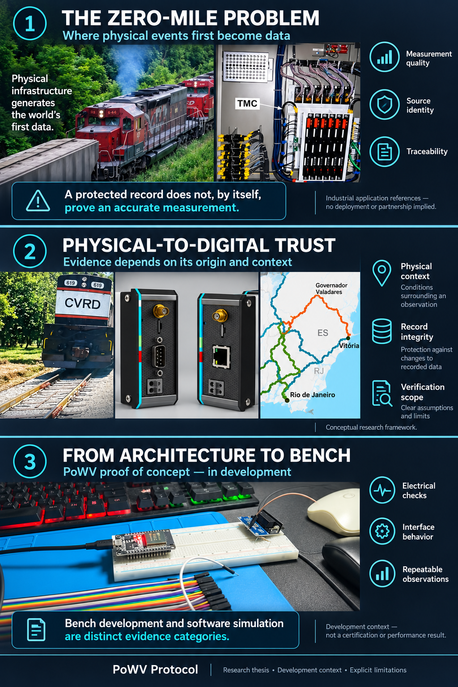

PHYSICAL-TO-DIGITAL TRUST INFRASTRUCTURE
Proof of Weighted Value
Enterprise-grade decentralized infrastructure for Real-World Asset verification and physical-to-digital cryptographic consensus.
01 / THE PROBLEM
Trust should be verifiable.
PoWV connects physical reality to digital systems with cryptographic proofs, distributed validation, and auditable data pipelines.
02 / THE PRIMITIVE
Weighted consensus.
Evidence is evaluated according to source quality, confidence, and operational context.
High-Trust Industry Applications
A common verification layer for the real world.
RWA & Tokenization
Prove the existence, status, and provenance of assets before they enter digital markets.
Supply Chain
Create tamper-evident records across physical custody and digital settlement.
DeFi Infrastructure
Bring high-integrity real-world signals to smart contracts and data feeds.
03 / ARCHITECTURE
Built for evidence, not assumptions.
PoWV is designed as a modular trust stack: ingestion at the edge, cryptographic attestation at the source, and consensus at the protocol layer.
01 collect_physical_signal()
02 attest_source_integrity()
03 calculate_weighted_consensus()
04 settle_verified_value()
RWA
Verification
IoT
Data ingestion
HSM
Key security
ZK
Privacy
API
Interoperability
04 / PROOF FLOW
From physical event to verifiable evidence.
Every event moves through a deterministic chain of capture, serialization, signing, validation, hashing, and anchoring. The digital record does not replace the physical fact — it preserves its origin, integrity, and operational context.
E → M → P → σ → V → H → A → I
event · measurement · package · signature · validation · hash · anchor · interpretation
01 physical_event()
02 capture_measurement()
03 serialize_evidence()
04 sign_at_the_edge()
05 validate_context()
06 compute_hash()
07 anchor_audit_root()
08 interpret_event()
05 / TRUSTED ORIGIN
Integrity begins at kilometer zero.
PoWV binds a measurement to its device, operating state, time, location, and supporting evidence before the event reaches enterprise systems or distributed networks.
SOURCE
Physical Capture
Signals from scales, sensors, cameras, RFID readers, and operational equipment.
IDENTITY
Device Identity
Persistent cryptographic identity connects each event to its originating device.
SIGNATURE
Edge Attestation
Evidence is signed before passing through servers, APIs, or corporate applications.
CONTEXT
Operational State
Timestamp, location, calibration, firmware state, and visual evidence qualify the signal.
RS-232 · RS-485 · USB/SERIAL · MQTT · HTTPS · EPCIS
06 / DEFENSE IN DEPTH
No single source defines the truth.
Devices, networks, applications, and operators can fail. Trust is produced through the convergence of independent evidence rather than the authority of one participant.
Origin
Hardware identity, firmware state, calibration, and direct signal capture.
Validation
Cross-sensor checks, tolerance rules, provenance, and operational context.
Audit
Hashes, signatures, Merkle proofs, and independently verifiable anchors.
✓ verify_device_identity
✓ verify_firmware_state
✓ verify_calibration
✓ compare_independent_signals
✓ preserve_chain_of_custody
07 / MERKLE ANCHOR
Thousands of events. One auditable root.
Complete evidence remains in appropriate off-chain storage while event hashes are aggregated into a Merkle tree. Anchoring only the root reduces cost without sacrificing independent verification.
Evidence Storage
Telemetry, images, technical records, and documents retain their full context.
Cryptographic Aggregation
Individual hashes form a compact root representing the complete evidence set.
Independent Verification
A single event can be verified through its Merkle proof without processing the entire batch.
- batch_id
- PWV-2026-000184
- events
- 2,048
- evidence_root
- 0x8f32...91ac
- proof_mode
- MERKLE
08 / FIELD OPERATIONS
Designed for real operating conditions.
The edge continues to produce signed evidence during intermittent connectivity and synchronizes auditable batches when communication is restored.
Offline Resilience
Local signing, trusted time, and retained evidence preserve continuity during network failure.
Legacy Integration
Gateways connect existing industrial equipment to modern verification pipelines.
Batch Synchronization
Signed events are aggregated and transmitted efficiently when connectivity returns.
EDGE
Capture
OFFLINE
Resilience
WORM
Retention
MQTT
Transport
MERKLE
Audit
09 / INFRASTRUCTURE LAYERS
A modular physical-to-digital trust stack.
Each layer has a defined responsibility, allowing the protocol to integrate with different assets, industries, and enterprise environments.
L1
Physical Origin
Sensors, scales, cameras, identifiers, and operational equipment.
L2
Edge Gateway
Normalization, trusted time, device identity, and event signing.
L3
Validation Engine
Consistency rules, redundancy, provenance, and confidence evaluation.
L4
Evidence Storage
Preservation of source files, hashes, metadata, and audit records.
L5
Merkle & Anchoring
Cryptographic aggregation and independently verifiable commitments.
L6
Enterprise Integration
APIs, ERPs, logistics platforms, compliance, and settlement systems.
10 / SECURITY MODEL
A blockchain cannot repair a false origin.
PoWV protects the stage before anchoring. Hardware identity, attestation, calibration, redundant observations, and contextual validation reduce the risk of permanently recording a physically false event.
11 / DEVELOPMENT
From architecture to the bench.
Current development focuses on validating the end-to-end physical-to-digital pipeline: serial capture, event normalization, cryptographic signing, transmission, validation, Merkle aggregation, and audit.
12 / OFFICIAL CHANNELS
Documentation, repositories, and public channels.
Access the official technical documentation, protocol repositories, institutional presence, research publications, and audiovisual material.
PoWV Protocol
Explore the official organization, protocol repositories, research artifacts, security components, and physical-to-digital infrastructure development.
DOCUMENTATION
GitBook
Architecture, technical concepts, research, and protocol documentation.
OPEN ↗FOUNDER
Protocol Profile
Founder profile, strategic direction, and institutional positioning.
OPEN ↗NETWORK
Institutional updates, technical positioning, and ecosystem activity.
OPEN ↗PUBLICATIONS
Substack
Long-form analysis, protocol theses, and research publications.
OPEN ↗VIDEO
YouTube
Demonstrations, explanations, and audiovisual protocol material.
OPEN ↗VISUAL ARCHITECTURE / SELECTED VIEWS
Physical-to-digital infrastructure in context.
Selected visual representations of physical evidence, edge connectivity, industrial weighing, asset minting, enterprise integration, and the zero-mile trust problem.

Physical Evidence
Where real-world events become verifiable data.

Edge Connectivity
Capture, protect, and transmit evidence at the edge.
Road Weighing
From load cells to verifiable weight records.
Asset Minting
From verified physical evidence to on-chain assets.
Digital Twin & Finance
Physical evidence connected to enterprise and financial systems.

Zero-Mile Framework
From the origin of evidence to bench validation.